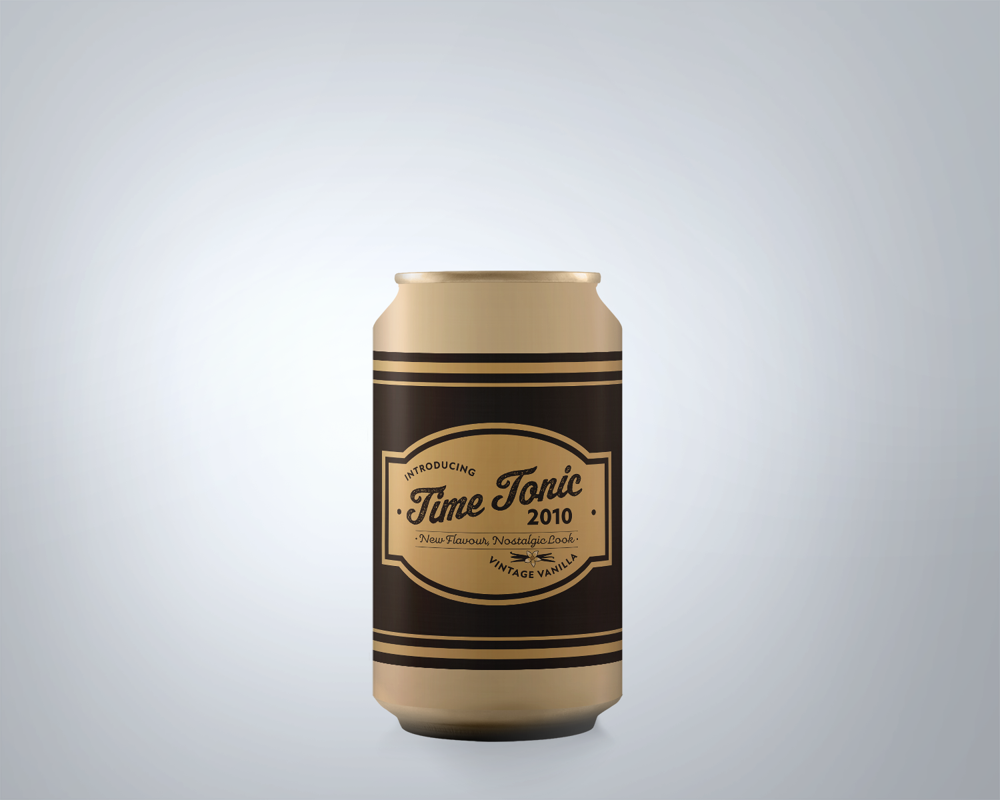
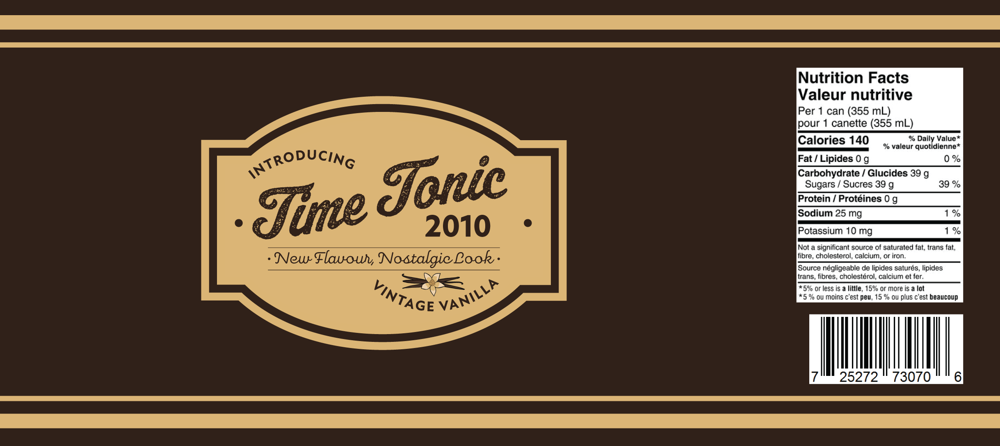

Time Tonic
 2010s - Vintage Style
Information technology rapidly progressed, and smartphone and internet usage was widespread by the 2010s. This made it easy to stay informed about the political conflicts, terror attacks, natural disasters, and the global warming crisis occurring throughout the decade. This integration of technology as a constant in daily life, along with the continuous stream of mentally taxing world news influenced designers to move away from tech-inspired styles reminiscent of the current culture, instead looking towards the past with nostalgia and creating vintage-inspired designs.
Vintage design, though not always mimicking a specific era’s style, typically includes elements that were popular during the late 19th and 20th centuries. This includes designs that appear as if they were created with early design technology such as stamps on paper, carvings on wood, or letterpress designs. Texture, rustic neutrals, and humanist fonts define vintage style in the 2010s.